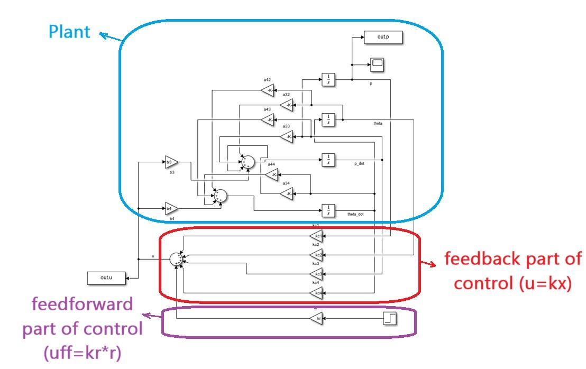
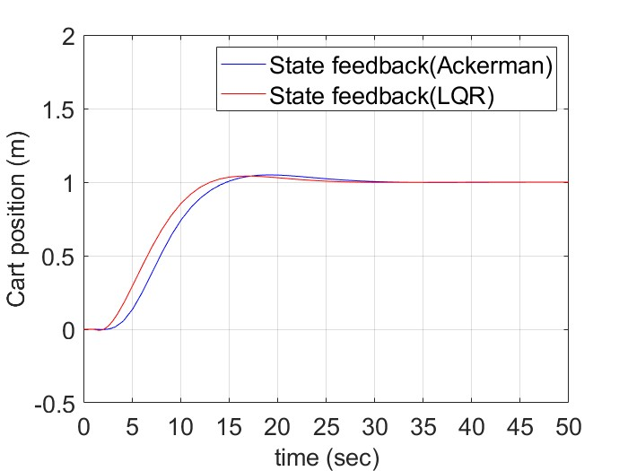
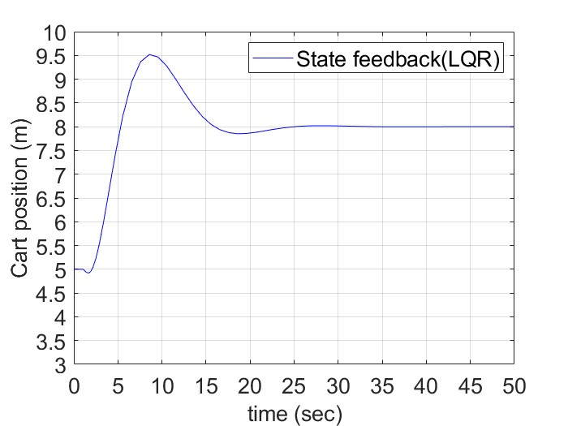
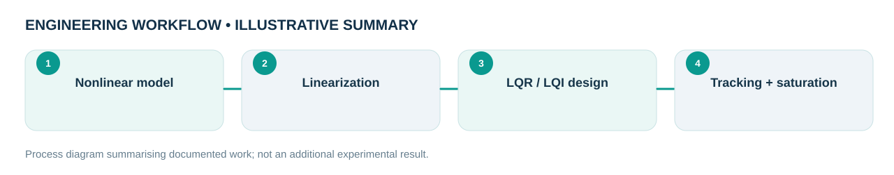

Engineering problem
How should a controller stabilize an inherently unstable cart-pendulum equilibrium while respecting finite actuation?
Analysed the upright equilibrium of a cart–pendulum system and compared state-feedback pole placement with linear-quadratic regulator designs. Extended the study to integral tracking, actuator force constraints and nonlinear response.
My role and technical ownership
I modelled and analysed the cart-pendulum dynamics, implemented controller comparisons, and evaluated tracking and saturation behavior in MATLAB/Simulink.
How I approached the work
- Linearized the system about the upright equilibrium and examined controllability and unstable pole locations.
- Compared pole placement with optimal LQR state feedback, then introduced integral action for reference tracking.
- Investigated nonlinear simulation, bounded control input, saturation and anti-windup implications.
What the evidence shows
Controller-response plots and MATLAB/Simulink scripts show the comparative simulated dynamics and trade-offs. No physical cart-pendulum rig was tested.
Design files, models & results
Original CAD screenshots, simulation plots or project photographs are shown wherever they were available. Select a figure to open the larger file. Workflow graphics are clearly labelled as illustrative.




Limitations and engineering learning
Academic simulations; the study does not demonstrate a physical stabilized pendulum.
Engineering takeaway: Linear-controller performance is local to the selected equilibrium; nonlinear behavior and force saturation limit generalization.